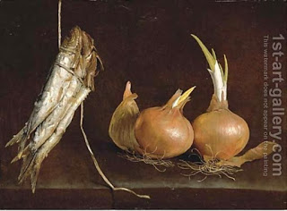

Nedarim 58 - The question of an onion
Rabbi Ishmael from a village by the sea asked a question about an onion, and some say that he brought an actual onion. This onion was picked up in a Shmita year, and thus was prohibited to trade , to keep after there were no more such onions in the fields, and so on. However, it was replanted in the next year, experienced significant growth, and now the question is: does this new permitted growth nullify the prohibitions of the base onion, or does the new growth itself have the limitations of the Shmita produce.
The reason that Rabbi Ishmael asked about the complete onion and not about just the new growth is this: the answer to this question would automatically give him the answer about the new growth. So he preferred to ask one question that combined the two.
The Talmud attempts to find the answer by comparing this to other contemporary or older rulings, but finds differences; for example, in our case the onion does not completely decomposes in the ground, but other rulings may be talking about cases where a seed does decomposes.
So far the question is unresolved. The question is unrelated to vows (Nedarim), but it is discussed here because on the next page the Talmud will attempt to derive a proof from an a law of vows we just learned .
Art: Sardines suspended from twine and onions on a stone ledge by Giuseppe Recco